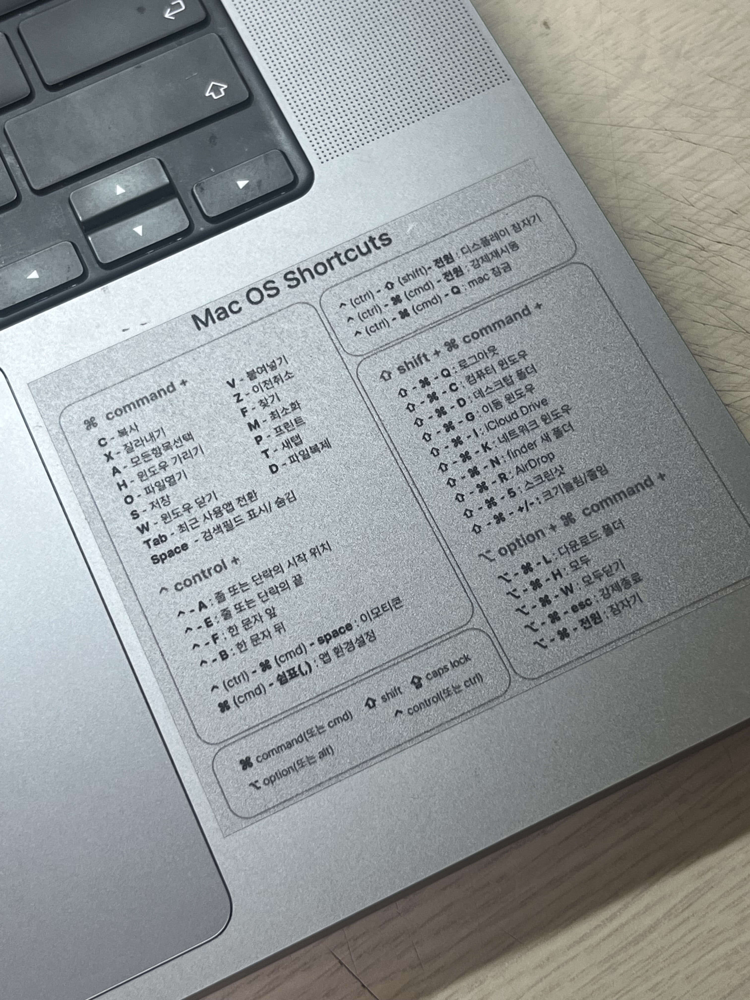
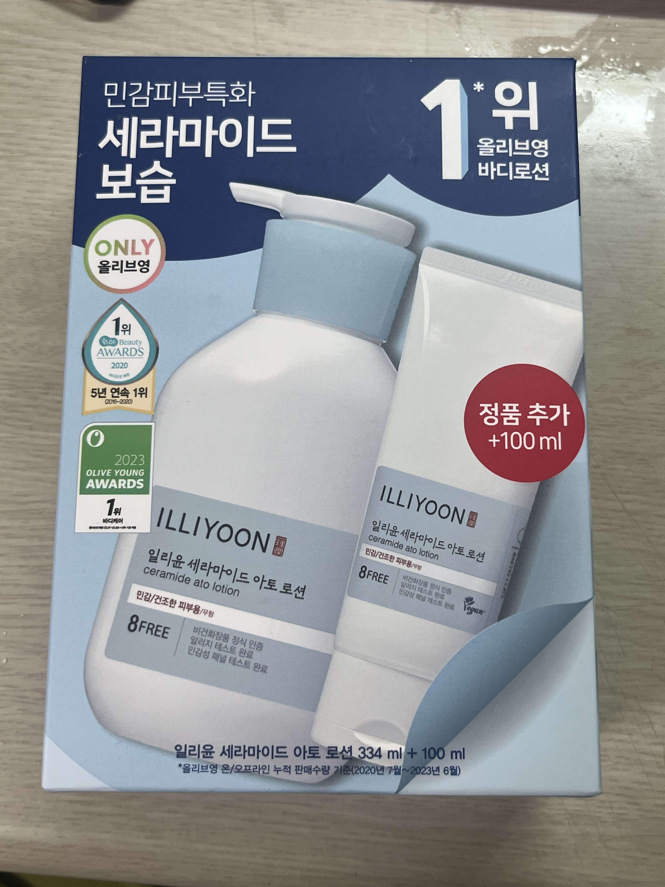
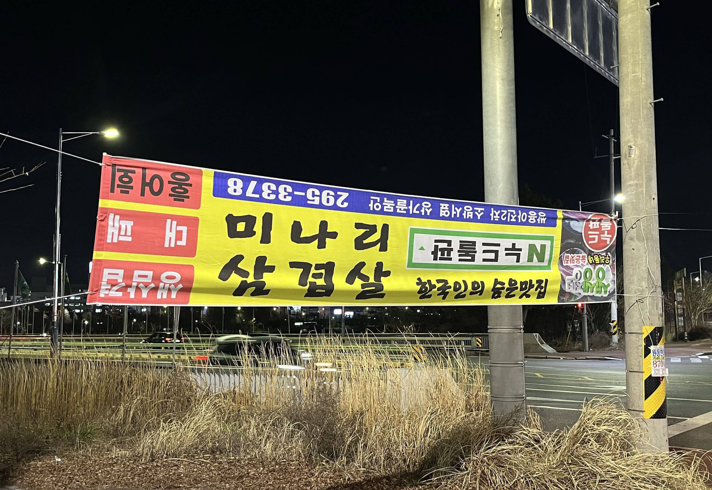
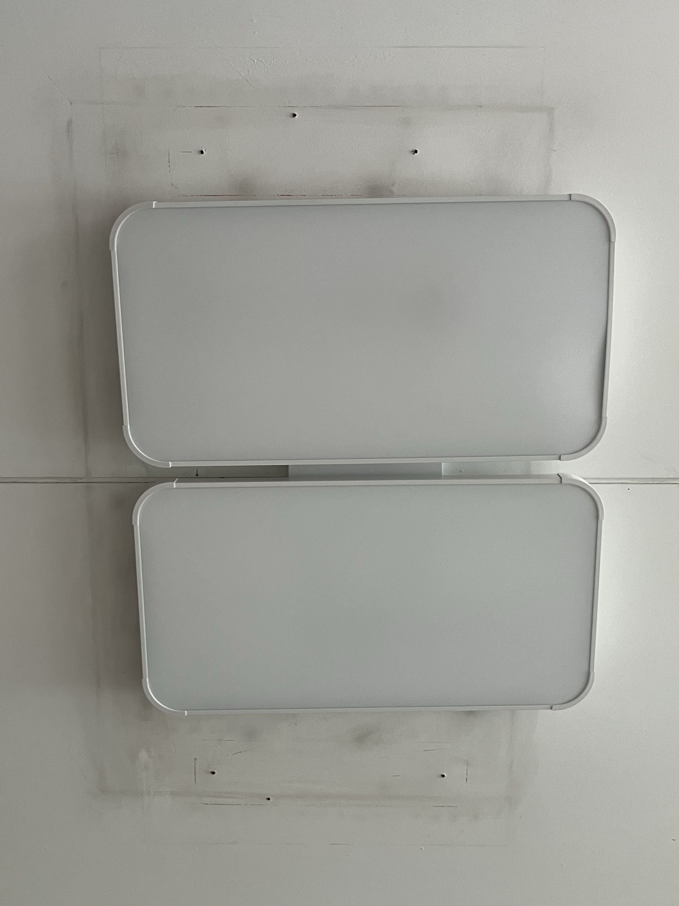
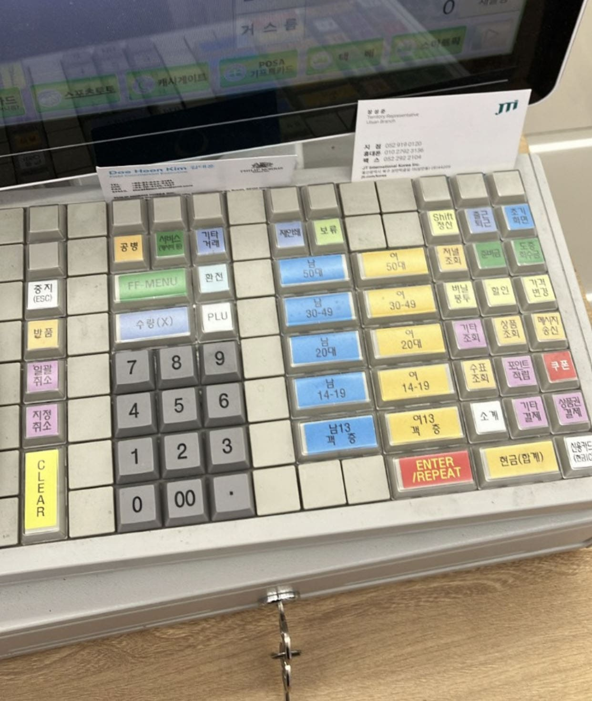
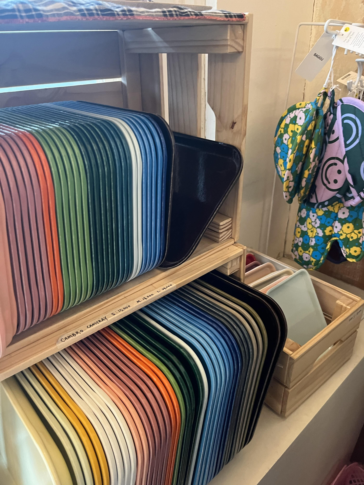
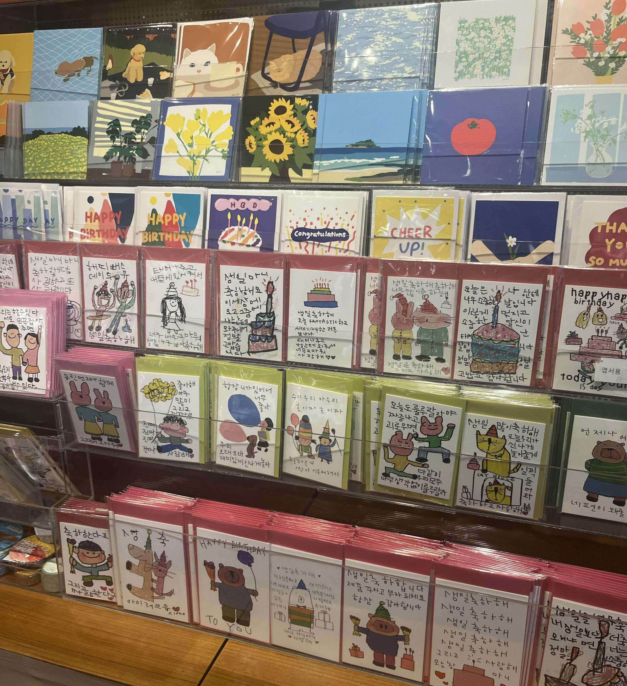
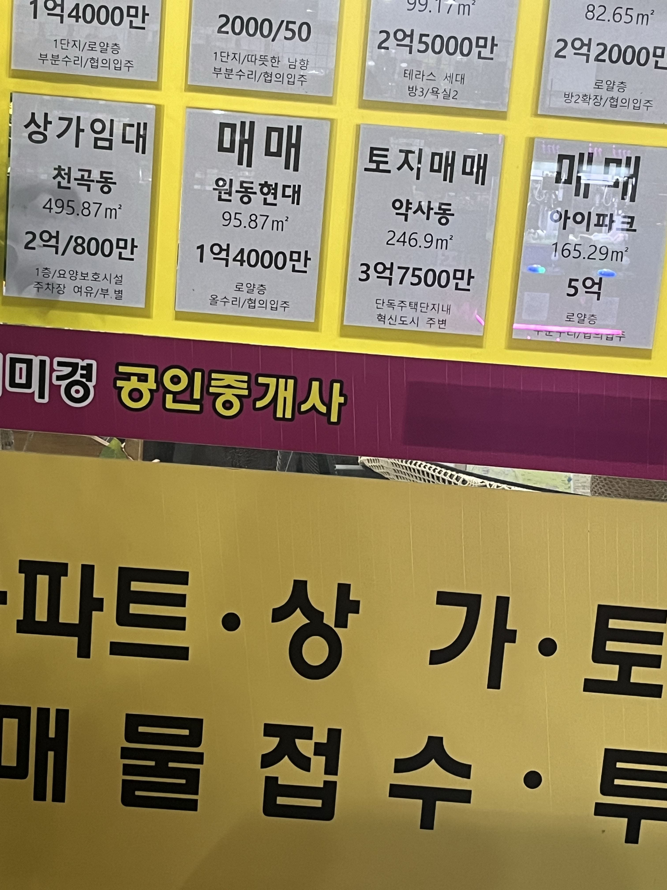
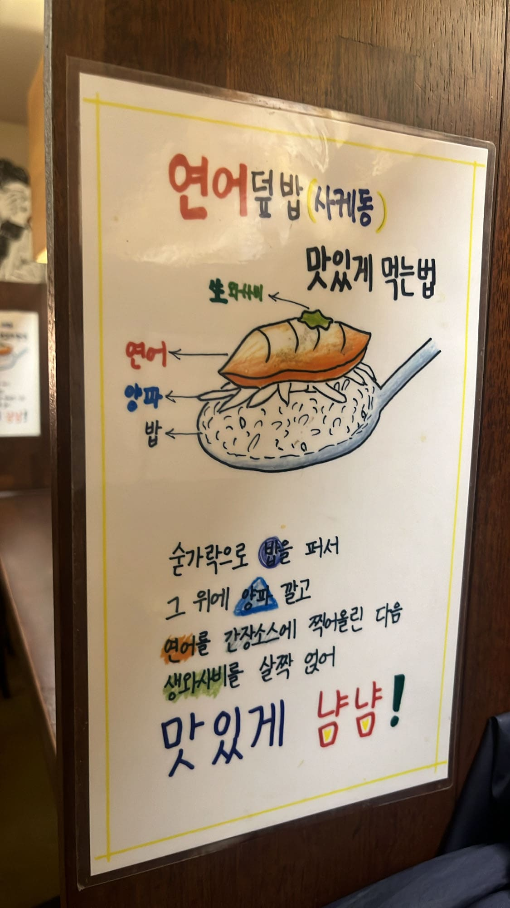
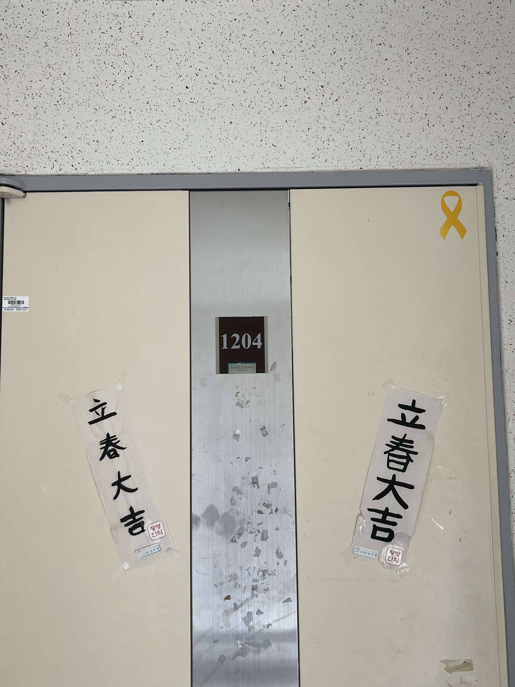

맥북 전용 단축키 스티커
동기에게 받은 맥북 전용 단축키 스티커이다. 나는 맥북을 2년 정도 썼지만 기능을 제대로 활용을 못 했다. 이 스티커가 있어 조금 더 활용이 가능해졌다. 예를 들면 강제 종료, 파일 복제, 에어드롭 기능을 일일이 마우스로 했었다. 하지만 이제 단축키로 사용을 할 수 있다. 스티커의 디자인도 투명이라 언뜻 보면 남에게는 잘 보이지 않지만 사용자에게는 잘 보인다. 단축키의 모양도 같이 그려져 있고 기능 별로 잘 분류가 되어있어서 보기 편하다.
바디 로션 패키지
올리브영에 파는 바디로션이다. 바디로션을 구매하기 위해 올리브 영에 방문을 했다. 원래 이 바디로션을 사용했지만 다른 제품도 사용해 보고 싶어서 여러 개를 구경했다. 다른 제품들과 다르게 1위라고 많이 적혀져 있었다. 올리브영에서만 판매를 하고 로션도 추가로 준다고 빨간색으로 되어있어 다른 제품들과 다르게 눈길이 갈 수밖에 없었다. 특히, 다른 제품들은 비닐포장으로 되어있는데 예쁜 하늘색 박스가 눈에 띄기도 하고 대부분의 통이 누리끼리한 색상인 반면에 깔끔해 보이는 하얀색이라 좋았다. 결국 이 바디로션을 재구매를 했다.
우리 동네 삼겹살 광고
우리 동네에 있는 삼겹살 맛집 현수막이다. 몇 년 전부터 있던 광고였는데 이번 선거철에 없어졌다가 또 생겨났다. 미나리, 삼겹살만 정상적이고 가게 명인 누드 돌판을 포함한 모든 것들이 반대로 되어있다. 맛집이라 그런지 모든 것을 반대로 해도 사람이 많다는 자신감이 있다는 것으로 보였다. 실제로 항상 이 고깃집은 사람이 늘 북적북적하다. 어떻게 보면 디자인은 촌스러워 보이지만 노란색이라 잘 밤에도 잘 보이고 보편적이지 않아서 한 번 보면 절대로 잊지 않고 각인이 된다.
사기당한 우리집 조명
우리 집 조명이다. 이번 주에 내가 학교에 있는 동안 거실 LED 조명을 교체를 했는데 아버지가 조명을 사기당해서 이상한 디자인의 조명을 달게 되었다. 원래는 꺾인 면이 없고 부드럽고 완만한 조명이 왔어야 했다. 하지만 배송이 온 것은 꺾인 면이 각져있다. 실제로 보면 누가 봐도 싸 보이는 재질과 자세히 보면 한 쪽 면이 꺼져있다. 크기도 잘못 온 바람에 불에 그을린 천장이 잘 보이고 전선을 연결했던 구멍까지 잘 보인다. 거실에 있으면 새까만 천장과 묘하게 이상한 디자인의 조명이 자꾸 눈에 보여 거슬린다.
세븐일레븐 포스기
세븐일레븐 편의점 포스기이다. 전에 이곳에서 아르바이트를 했는데 지금은 친구가 하고 있어서 점장님께도 인사를 드릴 겸 놀러 갔다. 세븐일레븐은 일본에서 왔기 때문에 아날로그적인 계층 버튼이 아직도 있다. 물론 이제는 잘 사용하지 않지만 포스기 자리를 너무 많이 차지한다. 다른 버튼들 디자인도 너무 작고 분류가 잘 되어있지 않고 색상조차도 왜 이렇게 넣어 두었는지 잘 모르겠다. 처음에 일을 했을 때 포스기 적응하는 것이 꽤 오래 걸렸다.
소품샵에 파는 쟁반
동성로의 한 소품샵에서 파는 쟁반들이다. 나에게 쟁반이란 집에서 과일을 깎아먹을 때 쓰는 약간 누렇고 흠집이 많이 나있는 쟁반이 전부였다. 하지만 이 쟁반들을 보고 나는 우물 안 개구리였다고 생각했다. 이렇게 예쁜 쟁반들이 있다니 놀라웠다. 색상도 내가 정말 좋아하는 약간 비비드한 컬러에 모서리도 각져있지 않고 재질도 흠집이 잘 나지 않을 것 같았다. 친구가 밥 먹을 때 잘 흘려서 쟁반에 먹는다고 했는데 나도 그런 편이라 구매하기로 결정했다. 곧 여름이라 하늘색을 구매하고 싶었지만 식사 할 때 사용하면 밥이 맛없게 보일 거 같아 핑크 코랄 색상을 구매했다.
교보문고 생일 카드
교보문고에 파는 생일 카드이다. 곧 친구 생일이라 생일카드를 구매하러 방문했다. 위의 카드처럼 귀엽고 약간 감성 있는 카드의 디자인도 좋지만 밑에 있는 카드처럼 어린아이들이 크레파스, 색연필로 그린 듯한 느낌에 삐뚤삐뚤한 글씨로 진심을 담아서 쓴 순수한 멘트들이 감동적이었다.
부동산의 외관 색상
부동산의 색상이다. 친구와 동네를 산책하면서 깨달은 것이 있는데 부동산, 공인중개사의 색상이 노란색 또는 핑크색이 들어간다는 것이다. 사실 우리 동네에서만 한정일 수 있지만 대부분은 두 개 중 하나의 색상이 들어가는 것 같았다. 그래서 노란색의 의미를 찾아보았는데 행복 또는 시선을 사로잡는다는 특징 말고는 특별한 것이 없었다. 앞으로 다른 동네에 가게 되었을 때 정말 맞는지 아닌지 유심히 관찰을 해봐야겠다.
연어덮밥 맛있게 먹는 법
음식점에 있는 연어 맛있게 먹는 방법이 그려진 그림이다. 컴퓨터로 만든 일러스트 그림이면 그다지 맛있어 보이지 않을 텐데 귀여운 손그림과 매직으로 글씨를 쓰신 것이 귀여웠다. 가게 분위기도 일본식이고 귀여운 소품들이 있어 잘 어울리는 그림이다. 새우덮밥이 먹고 싶어서 방문했지만 저절로 연어 덮밥을 시켜 먹었다.
우리집 현관 문
우리 집 현관 문 앞에 붙은 입춘대길이 한자로 쓰인 종이이다. 오른쪽은 동생이 유치원에서 5살 때 쓴 거고 왼쪽이 6살 때 쓴 것이다. 5살 때는 선생님 손잡고 그린 것이라 또박또박 쓰이고 6살 때는 혼자 적어서 글씨가 퇴화되었다. 심지어 종이의 각도도 아예 반대로 붙인 채로 10년이 넘게 지났다. 이렇게 잘못된 디자인으로 아직까지 입춘대길의 덕을 보지 못했다.